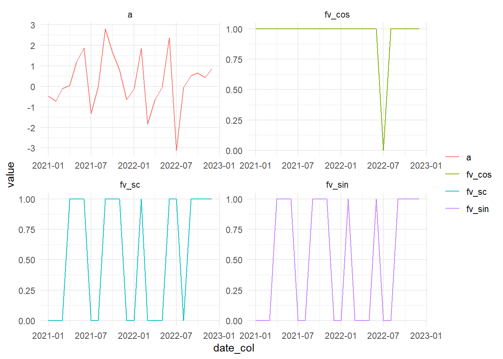

hai_fourier_discrete_vec(
.x,
.period,
.order,
.scale_type = c("sin", "cos", "sincos")
)Introduction
Sometimes in modeling you may want to get a discrete 1/0 vector of a fourier transform of some input vector. With {healthyR.ai} we can do this easily.
Function
Here is the full function call:
Here are the parameters to the function and what they expect:
.x- A numeric vector.period- The number of observations that complete a cycle.order- The fourier term order.scale_type- A character of one of the following:sin,cos,sincos
The internal caluclation is straightforward:
sin = sin(2 * pi * h * x), where h = .order/.periodcos = cos(2 * pi * h * x), where h = .order/.periodsincos = sin(2 * pi * h * x) * cos(2 * pi * h * x) where h = .order/.period
Example
Let’s work throught a quick and simple example.
library(dplyr)
library(ggplot2)
library(healthyR.ai)
library(tidyr)
len_out <- 24
by_unit <- "month"
start_date <- as.Date("2021-01-01")
data_tbl <- tibble(
date_col = seq.Date(
from = start_date,
length.out = len_out,
by = by_unit
),
a = rnorm(len_out, sd = 2),
fv_sin = hai_fourier_discrete_vec(a, 12, 1, "sin"),
fv_cos = hai_fourier_discrete_vec(a, 12, 1, "cos"),
fv_sc = hai_fourier_discrete_vec(a, 12, 1, "sincos")
)
data_tbl# A tibble: 24 × 5
date_col a fv_sin fv_cos fv_sc
<date> <dbl> <dbl> <dbl> <dbl>
1 2021-01-01 -0.486 0 1 0
2 2021-02-01 -0.708 0 1 0
3 2021-03-01 -0.119 0 1 0
4 2021-04-01 0.0405 1 1 1
5 2021-05-01 1.19 1 1 1
6 2021-06-01 1.88 1 1 1
7 2021-07-01 -1.32 0 1 0
8 2021-08-01 -0.0214 0 1 0
9 2021-09-01 2.80 1 1 1
10 2021-10-01 1.67 1 1 1
# … with 14 more rowsVisual
Let’s visualize.
data_tbl %>%
pivot_longer(cols = -date_col) %>%
ggplot(aes(x = date_col, y = value, color = name)) +
geom_line() +
facet_wrap(~ name, scales = "free") +
theme_minimal() +
labs(color = "")
Voila!